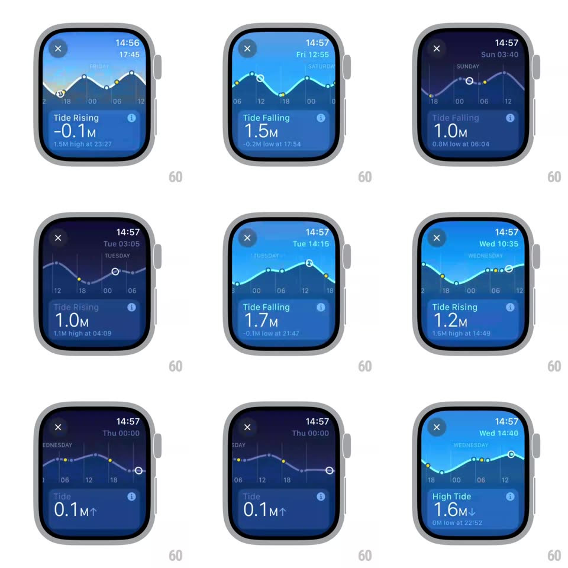

Media
Frame-by-frame

Rebuild this interaction 1:1: watchOS Tides - turning the crown (or dragging) scrubs time forward and backward, sliding the tide curve under a fixed now-marker while the day label, clock, tide state ("Tide Rising/Falling"), height, and the next-high/low note update live, and the sky gradient behind the graph shifts with the time of day.

Rebuild this interaction 1:1: watchOS Tides - turning the crown (or dragging) scrubs time forward and backward, sliding the tide curve under a fixed now-marker while the day label, clock, tide state ("Tide Rising/Falling"), height, and the next-high/low note update live, and the sky gradient behind the graph shifts with the time of day.
## Integration
Integration: stack-agnostic spec - springs given as stiffness/damping, timed motions as duration + curve; map every value to your framework and animation library of choice.
## Scene
Watch face sized tide view: close (x) top-left, clock top-right, day label above a smooth sine-like tide curve with yellow high/low dots and a ring marker for the selected time, hour ticks (00/06/12/18) below the curve, and a bottom card: "Tide Rising/Falling", big height ("1.3M"), and the next extreme ("1.5M high at 23:27").
## Motion spec
Pattern: crown-scrubbed time travel with coupled sky.
- Scrub: the curve translates horizontally under a fixed center marker (1:1 with crown rotation, ~15min of tide time per detent-ish tick); the marker ring rides the curve's height.
- Sky: the background gradient tweens through the day cycle as time passes (deep navy night -> bright blue midday -> pink dusk), continuous with scrubbed time.
- Bottom card: state flips Rising/Falling exactly at curve extrema (label + tiny arrow, crossfade 150ms); height counts to the marker's value (live, monotonic with scrub); the note line updates to the next high/low.
- Day label rolls over at midnight (TODAY -> FRIDAY...); clock top-right tracks the scrubbed time.
## Calibration
- Everything derives from one time value: curve offset, sky, labels - no independent animations to drift apart.
- The curve itself never deforms - it is data; only its window moves.
## Reduced motion
Scrub still works (it is navigation); sky color steps per 6-hour block instead of continuous tween.
## Don't miss
- The ring marker stays at screen center; the world moves under it.
- Yellow dots mark only true highs/lows and pass under the marker as you scrub.